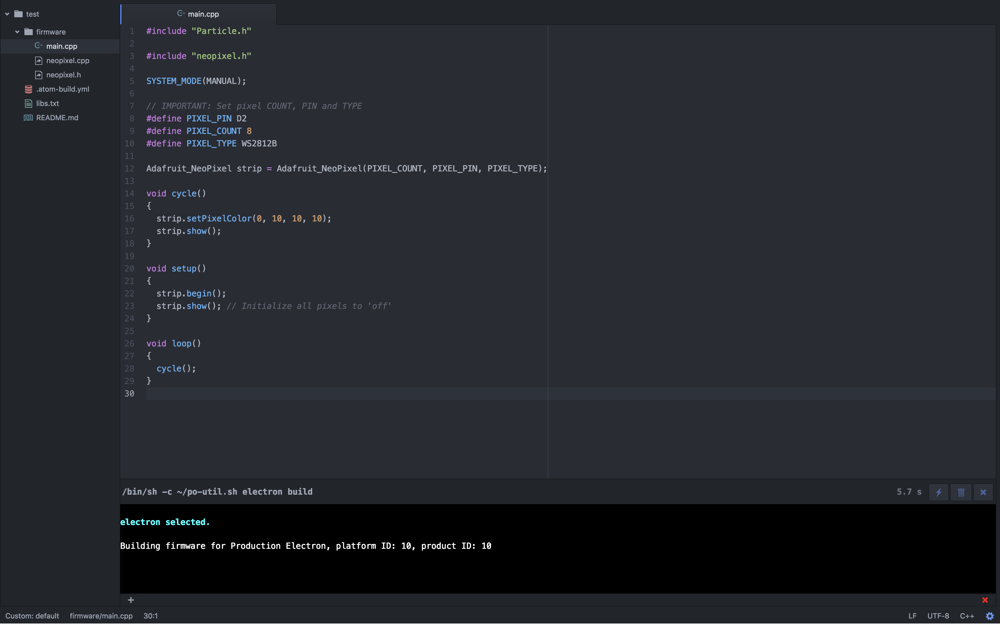

About
Particle Offline Utility, pronounced po-util, is a script for installing and using the Particle Toolchain on Linux and macOS.
po-util makes it easy for developers to download the Particle Toolchain and install the required dependencies to quickly begin creating projects using the Particle Platform.
po-util features a responsive experience, giving developers the tools they need for seamless local development, providing understandable commands for simplifying complex tasks like properly compiling and flashing firmware.
Install
There are two versions of po-util. The first is po-util Classic, which is designed for Linux distributions. The second is po-util Homebrew Edition, which is designed for macOS. Classic can be installed by following the instructions below:
The easiest and most secure way to install po-util is to download po-util.sh directly and run it:
$ curl -fsSLO https://raw.githubusercontent.com/nrobinson2000/po-util/master/po-util.sh
$ chmod +x po-util.sh ; ./po-util.sh install ; . ~/.bashrcYou can also install po-util by cloning the GitHub repository:
$ git clone https://github.com/nrobinson2000/po-util
$ cd po-util
$ ./po-util.sh install ; . ~/.bashrcOn macOS, Homebrew Edition can be installed by running these commands:
$ brew tap nrobinson2000/po
$ brew install po
$ po installNote: Both versions of po-util have the same features. In December 2016, Homebrew Edition was forked from po-util in order to allow po-util to be installed with Homebrew. The original po-util was renamed to Classic, and was made Linux exclusive. Both Classic and Homebrew Edition continue to be developed and maintained in parallel.

Key Features
Library Manager
The library manager makes it easy to use Particle libraries when developing with po-util locally by using
gitto download Particle libraries hosted on GitHub and save them to a ~/.po-util/lib directory so that they make be linked inside of projects later. Read more about the Library Manager here.-
Full dependency setup
po-utilinstalls all of the dependencies required for local Particle Development, including the ARM toolchain, dfu-util, nodejs, particle-cli and the Particle firmware. -
Local compilation and support for flashing over USB or OTA
Building firmware locally for Electrons, Photons and P1s, and automatically flashing over USB using dfu-util or Over The Air using particle-cli. Sequentially flashing multiple devices at once over the air is also supported.
-
Shortcuts for Building in Atom
po-utilsupports shortcuts for Atom, the popular open-source IDE by GitHub. The shourcuts provide quick access to commonly used commands forpo-util, including: building firmware, flashing firmware over USB, and flashing firmware Over The Air. Read more about the shortcuts here.
- Standardized project directory structure.
- Upgrading the system firmware of devices.
- Monitoring the serial output of devices.
- Manually putting devices into DFU mode and out of DFU mode.
Project Directory Structure
The directory structure of a full po-util project is arranged like so:
po-util_project/
├ firmware/
| ├ main.cpp
| ├ lib1.cpp
| ├ lib1.h
| └ ...
├ bin/
| ├ firmware.bin
| └ ...
├ devices.txt
├ libs.txt
├ .atom-build.yml
└ README.md
-
All user code is kept inside of
main.cpp. -
The compiled binary will be named
firmware.bin, and it will be inbin/. -
You can keep track of which devices are in a project and list which ones to be flashed Over The Air in
devices.txt. -
You can easily add libraries to a project. Added libraries are kept track of in
libs.txt. -
Atom shortcuts are a new feature of
po-util, and.atom-build.ymlcontains the configuration for the shortcuts.
Project setup
When using po-util, your code is arranged into projects with the structure described above. This not only lets you easily work on many projects on one computer, but it provides a standardized way of building locally.
Creating a project with po-util is simple. All that you need to do is create a folder and run use the po init inside of it to initialize the project by creating the appropriate files and directories. Below is an example:
$ mkdir someProject
$ cd someProject
$ po init DEVICE_TYPEYou can set DEVICE_TYPE to either photon, P1 or electron. This is necessary for generating the Atom shortcuts file appropriately.
More Information
Here is some more information about using po-util.
Writing Firmware
po-util compiles any .cpp and .h files found in the firmware/ directory, but not .ino files, so #include "application.h" must be present in your main.cpp file. This is done for you when you run the po init command to create a project directory.
Building Firmware
To compile firmware, simply run po DEVICE build, substituting DEVICE for
photon, P1, or electron. To compile and flash firmware to your device using dfu-util, simply run po DEVICE flash. To clean the project, run po DEVICE clean.
DFU Commands
To upload precompiled code over USB, run po DEVICE dfu. To put your device into dfu mode, run po dfu-open. To get your device out of dfu mode, run po dfu-close.

Over The Air (OTA) Uploading
To upload precompiled code over the air using particle-cli,
run po DEVICE ota DEVICE_NAME, where DEVICE_NAME is the name of your device
in the Particle cloud. You must be logged into particle-cli to use this
feature. You can log into particle-cli with particle cloud login.
You can also flash code to multiple devices at once by passing the -m or
--multi argument to ota. This would look like po DEVICE ota -m.
This relies on a file called devices.txt that you must create in your po-util
project directory.
NOTE: This is different from the product firmware update feature in the Particle Console because it updates the firmware of devices one at a time and only if the devices are online when the command is run.

Triggering DFU mode on your Device(s)
By default, po-util changes the trigger DFU Mode
baud rate to 19200, as it is a more friendly baud rate for
Linux Distributions. To make your device(s) recognize this baud rate,
you must run po DEVICE upgrade. This will also update the
system firmware on your device(s).
If you wish to use the default Particle DFU Mode baud rate, you may change the DFUBAUDRATE=19200 line in the ~/.po configuration file to DFUBAUDRATE=14400.
Praise for po-util
"I think you identified a common pain point for a lot of users, and the automated installation of the Particle toolchain is a problem that we've been focused on a lot recently ... you should already feel proud of yourself because you have made a meaningful contribution to the community. We are all very thankful for it - our community regularly impresses us, and you are certainly not an exception."
Will Hart, Particle General Manager
"Nice! This is great stuff. Definitely helpful for the local dev / offline use case. Thanks for sharing."
Avidan Ross, Particle Investor
"Po-util is a very handy script - thanks for sharing."
H.S, Particle Community Member
"I can't heart this enough!"